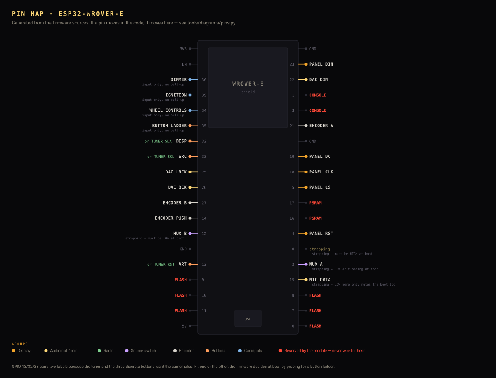
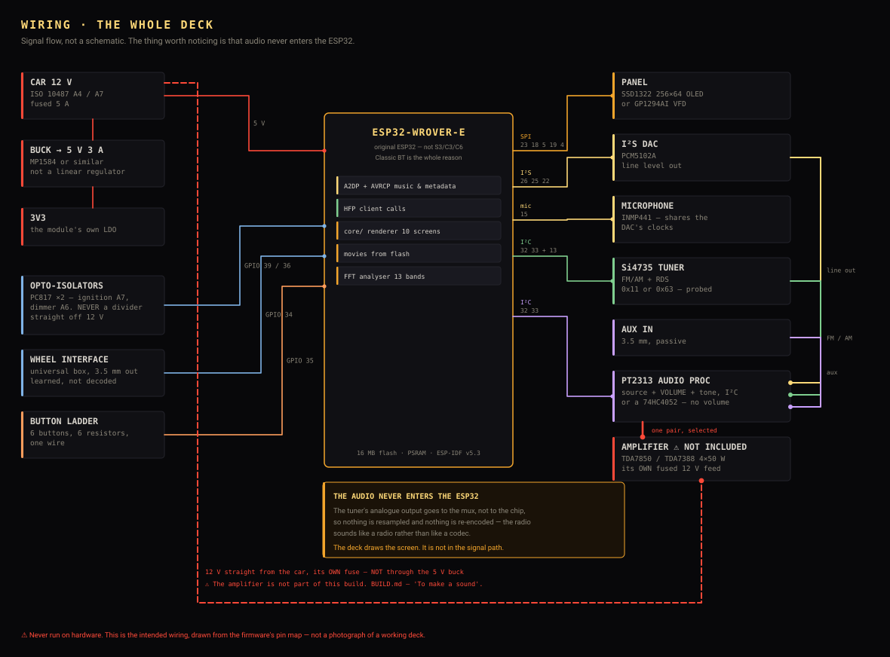

Wire the boards. Seven wires for the panel, three for the DAC, one wire for all the buttons.

#define PIN_… lines, it refuses to
draw a GPIO that two drivers both claim, and CI fails if the picture and the
code disagree — because whoever is reading a wiring diagram is holding a
soldering iron. Red pins belong to the module: flash, PSRAM, console.
Two traps that each cost an evening.
GPIO 34–39 are input-only and have no internal pull-ups. A button on one floats and reads as random presses, which looks exactly like a firmware bug and is not one.
ISO 10487 standardises the connector but not the pinout. A4 and A7 — permanent live and ignition — get swapped by manufacturers. Meter the harness before you connect anything to it.
Every front-panel button hangs off a single ADC pin as a resistor ladder: one side of every switch commoned to a pulled-up node, the other leg to ground through its own resistor, so each button lands on its own voltage. Six buttons, one GPIO. The firmware probes the ladder at boot and, if it does not find one, falls back to discrete buttons — which is also how it decides whether the tuner's pins are free.
The amplifier takes its own fused 12 V feed, not the deck's 5 V buck — a buck regulator sized for a microcontroller will brown out on bass. But the amplifier and the ESP32 must share one ground point. Two grounds at slightly different potentials is what alternator whine is, and it appears the day you fit it to the car, not on the bench.
Pin-by-pin tables, including the tuner, the mux and the steering-wheel input, are in BUILD.md and CONTROL.md.